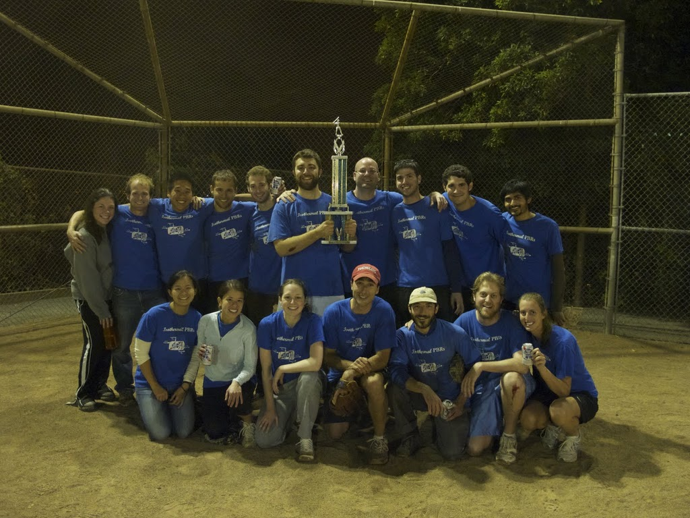

Archived News and Events
2014
Science and Society Speaker Series
February 12, 2014
Many thanks to Dr. Andrea Armani of USC for her talk titled "Integrated Photonics for Exploring Biological Systems."
2013
Science and Society Speaker Series
September 25, 2013
Big thanks to Dr. C. Grant Willson from the University of Texas at Austin for his great seminar in our Science and Society Speaker Series titled "Polymers for High Resolution Imaging Applications."
CBE Fall Picnic
Saturday, September 28, 2013
12-4pm: Codornices Park. Come out and celebrate the start of the school year with a great picnic, fun games, and great people!
ChemE team wins College of Softball Championship 3rd year in a row!
Congratulations to the PBR's for winning the champtionship yet again!
Wine and Cheese welcome reception
Monday, August 19, 2013
Come out and enjoy some wine and cheese with the new 1st years, your peers, and all the professors.
2013 College of Chemistry Softball Champions
August 2013
Congratulations to the ChemE softball team "Isothermal PBR's" for winning the College of Chemistry Softball Championship 3 years in a row!
GSAC ChemE vs. Chemistry Homebrew Competition
Friday, July 26, 2013
GSAC organized a College of Chemistry Homebrew Competition between Chemical Engineering and Chemistry. Come enjoy some homebrew from your peers and vote for the best ones!
ChemE Habitat for Humanity volunteer event
Saturday, June 15, 2013
GSAC organized a volunteer event for any interested ChemE grad students--we'll be helping with their Playhouse Program.
GSAC Graduation Party
Friday, May 10, 2013
5pm-10pm 775 Tan: Come celebrate the end of the year and wish the new graduates good luck in their next adventures!
5th Annual ChemE Broomball Outing
Friday, April 12, 2013
7pm-9pm Oakland Ice Center
Prospective Student Visit Weekends
Feb. 7-9 and Feb. 21-23, 2013
Fun events to introduce Berkeley and the department to potential graduate students.
2012
Prospective Student Visit Weekends
Feb. 23-26 and Mar. 8-11, 2012
Fun events to introduce Berkeley and the department to potential graduate students.
4th Annual ChemE Broomball Outing
Saturday, 18 February 2012
7pm-8:30pm Oakland Ice Center
Donation from BP
January, 2012
BP has made a generous donation to the ChemE Graduate Student Life fund. This gift will assist GSAC in providing more and better services and events to the graduate students of Chemical Engineering.
2011
Chemical Engineering
Department Holiday Party
Friday, 9 December 2011
GSAC and the ChemE Department would like to invite you and your family to a holiday party. The party will take place in 775 Tan at 5 pm.
ChemE Team Wins College of Chemistry Softball Championship
August 25, 2011

The Isothermal PBRs have captured the College of Chemistry softball league championship, which marks the first time a ChemE team has won the playoffs. The league includes 18 teams, with just four made up of ChemE graduate students. The PBRs defeated Marky Mark and the Funky Bunch by a score of 22-16 over a two-hour match.
New Department Head Graduate Adviser
August 2011
Prof. Rachel Segalman has accepted the position of Vice Chair of Graduate Education which also serves the role of head graduate adviser. The head graduate adviser serves as the academic adviser to graduate students. Feel free to consult with her about any academic matter.
Cal Dining Plan Now Available to Grad Students
Fall 2011
For the first time Cal Dining is offering graduate student meals plans. These can be used at any of the 15 Cal Dining locations around campus. Details are available here.
GSAC Information and Recruiting Meeting
Wednesday August 31st, 2011
5:30pm, Grad Student Lounge (321 Gilman)
Attend this informational meeting to learn more about GSAC and its role within the department and grad student life. Also find out how you can participate to improve the graduate student experience in our department. Refreshments will be provided.
Pizza Party
Friday August 19th, 2011
Join the department in welcoming the new ChemE graduate students with a pizza social. There will plenty of pizza and beer. Starts at 5pm in the Chemistry Plaza.
Prospective Student Visit Weekends
Feb. 24-27 and Mar. 10-13, 2011
Fun events to introduce Berkeley and the department to potential graduate students.
2010
Science and Society Speaker Series: Additional Talk Added
Spring 2010
Our second speaker on April 21st is Prof. Londa Schiebinger also from Stanford. She is the John L. Hinds Professor of History of Science and has researched the history of women's participation in science; the structure of scientific institutions; and the gendering of human knowledge. This talk will be co-sponsored with the Graduate Women in Engineering and her talk will be entitled: "Gendered Innovations in Engineering."
The final speaker, recently added, will be Prof. John Prausnitz from the department of Chemical Engineering here at Berkeley on April 28th. His talk is titled "The Social and Human Dimensions of Chemical Engineering."
Prospective Student Visit Weekends
Feb. 25 and Mar. 11 Weekends
Fun events to introduce Berkeley and the department to potential graduate students.
2009
Chemical Engineering
Department Holiday Party
Friday, 4 December 2009
GSAC and the ChemE Department would like to invite you and your family to a holiday party. The party will take place in 775 Tan at 5 pm.
Broomball
Saturday, 21 November 2009
5:30-7pm Oakland Ice Center
ChemE Keg
Friday, 6 November 2009
Join the department for some good beer and grilled food. Starts at 5pm in Gilman Plaza.
ChemE Graduate Fund Created in College
October 2009
A new fund dedicated to ChemE graduate student life has been created in the College of Chemistry. This fund will be available for graduate student socials, student invited speakers, and other activities to improve the atmosphere for graduate students. An online form is available to donate to this fund.
Additionally, through June 30, 2010, the board of trustees will match three-fold any gifts up to $1,000 from alumni in the classes of 2005-2009. This is a great opportunity to support your alma mater and take advantage of the 3x matching funds. More information here.
Survey/Get Involved
Fall 2009
All ChemE graduate students are strongly encouraged to take the graduate student survey they received recently by email. It will let us know what concerns you have about our department.
Also, GSAC is always looking for willing students to assist or provide additional suggestions. Find out how you can participate here.
How can GSAC serve you? Please let us know - we are always looking for ways to improve the graduate experience in our department.
Oktoberfest
Thursday, 29 October 2009
6-9pm Pualey Ballroom, MLK building
Hosted by the Graduate Social Club.
$5 for a hot dog (veggie options too) and beer (free refills, of course) + non-alcoholic beverages, and $1 off for bringing your own cup. Extra dogs are $1/ per hot dog. As always, grad student ID and proof of age required for entry. Non-UCB grads welcome as guests (approximate limit of 2/ UCB grad).
Summer Softball
Thursday and Friday Evenings, Summer 2009
Come on out and cheer for your ChemE softball teams! Check the GSAC calendar for game times. All games are played at the Golden Bear Softball Field on the Clark Kerr campus (map).
Pinot Party
Friday, 8 May 2009
The Department of Chemical Engineering and GSAC will host a Pinot Party in 775 Tan to celebrate the end of the semester. Our very own department head, Jeff Reimer, has selected several Pinot Noirs to compliment the variety of food available, including ham, vegetarian options, grilled vegetables, and lots more! If wine is not your thing, we'll have a nice selection of beer and non-alcoholic drinks as well.
And to keep you interested, there will be live entertainment! Do you play an instrument or sing and would like to be part of the fun? There will be a prize for the best act!
2008
Chemical Engineering
Department Holiday Party
Friday, 5 December 2008
GSAC and the ChemE Department would like to invite you and your family to a holiday party. The party will take place in 775 Tan at 5 pm. We will have lots of heavy hors d'oeuvres, wine, and beer to celebrate the season. This event is sponsored by the Graduate Assembly.
ChemE Keg
Friday, 14 November 2008
Join the department for some good beer and grilled food. Starts at 5pm in Gilman Plaza.
Oktoberfest
Thursday, 23 October 2008
6-9pm Pualey Ballroom, MLK building
Hosted by the Graduate Social Club. For $5, you get Top Dog and unlimited Trumer pilsner. Live acoustic music.
Cal graduate students only - student ID and proof of age required. Can bring up to two guests.
 Fall Picnic (map)
Fall Picnic (map)
Saturday, 13 September 2008
All graduate students, faculty, and staff are invited to the ChemE Department annual picnic. The department picnic will take place September 13th from noon-4pm at Codornices Park. GSAC will be on the grill providing food and drinks to everyone. We invite students, faculty, and staff to bring a side dish. For questions or more information regarding the picnic, please contact Sarah Huffer.
Map to picnic area at Codornices Park.
{kind=link}
New Vision Coverage
Wednesday, 13 August 2008
Starting August 15th, vision will be covered with your student SHIP plan at no additional cost to you. Check out the details at the SHIP website. Other important information about changes can be found here.
New Website Launched
Tuesday, 8 July 2008
This new GSAC website will be a valuable resource for information useful to graduate students in our chemical engineering department. Continual improvements will be made, so check back often. Please submit comments and content to us (cheme.gsac AT berkeley.edu) so that we can improve the site.